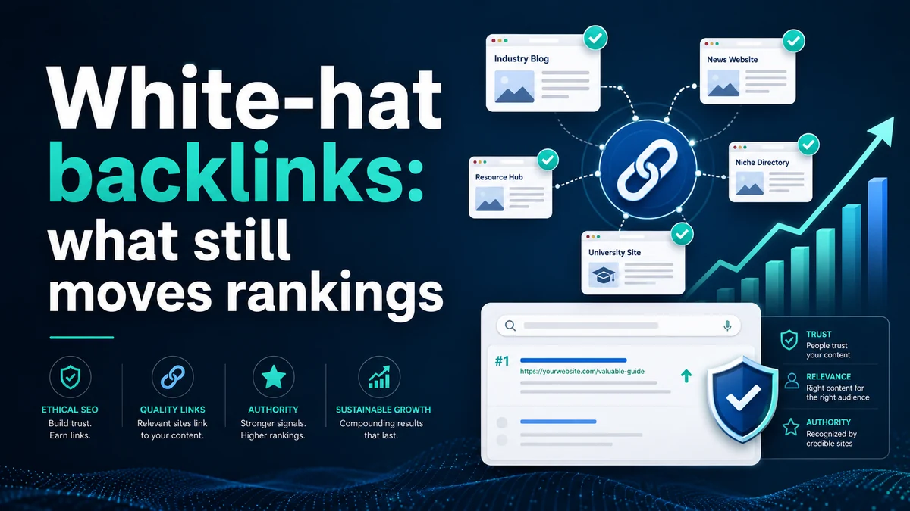

White-hat backlinks: what still moves rankings
Links remain one of Google's strongest ranking signals, but the ones that move the needle look very different from the ones that invite a spam penalty. Relevance and editorial context now matter far more than raw count — and the gap between a helpful link and a harmful one has never been clearer.
Every few years someone declares that links are dead. They aren't. What has changed is the cost of getting them wrong. Google's spam updates have made the penalty for manipulative link-building sharper and faster-acting, and the Helpful Content system has raised the bar for the pages that links point to. A backlink profile built on shortcuts is now a liability; one built on genuine authority compounds over time.
Why relevance and context now outweigh volume
For most of the early web, a link was a link. The more you had, the better you ranked. That model collapsed as spam techniques matured, and Google's algorithms have spent fifteen years learning to evaluate context, not just count. Today, a single link from a topically relevant, well-regarded site in your niche can outweigh dozens of links from unrelated directories or guest-post networks.
The signals Google uses to evaluate a link's worth include the topical relevance of the linking domain, the placement on the page (editorial body text versus footer versus sitewide), the anchor text in context (does the surrounding paragraph make sense?), and the overall quality of the linking site's content. A link embedded in a genuine article that cites you as a source is worth more than any number of links placed in exchange for payment or reciprocal placements.
- Relevance over reach. A link from a respected industry publication, even with modest traffic, signals more authority than a link from a high-DA general site with no topical connection to your business.
- Editorial placement matters. Links in the body of an article, cited naturally, carry more weight than those in author bios, sidebars, or footer blocks.
- Anchor text should read naturally. Exact-match keyword anchors at scale remain a manipulation signal. Varied, natural anchors — brand name, URL, descriptive phrases — look like organic citation.
- Linking domains should be clean. A link from a site with a history of spam, thin content, or penalties can actively harm more than it helps. Regular backlink audits are not optional.
What a low-quality or spammy link looks like
Google's spam policies describe the patterns that trigger manual actions and algorithmic filtering, and they are worth internalising because many "link-building services" still sell exactly these approaches. Paid links that pass PageRank without disclosure. Large-scale guest posting campaigns using templated articles with keyword-matched anchor text. Private blog networks. Links obtained through automated tools. Link exchanges disguised as editorial recommendations.
The common thread is that none of these links exist because a real person thought they were useful to their audience. Google's spam updates have become substantially better at detecting that absence of genuine editorial intent, and the consequences now extend beyond the individual links — a pattern of manipulative building can suppress the entire domain's performance in ways that outlast any disavow file. We have seen clients inherit this problem from previous agencies, and the cleanup invariably takes longer than building clean links from scratch would have.
How to earn links that actually work
The clearest path to durable backlinks is producing something that other sites in your industry want to reference. This sounds simple and is genuinely hard to execute consistently, which is why it works — there is no shortcut that mimics it at scale.
Digital PR is the most efficient version of this for client work. When we identify a genuine insight, a study, a tool, or a perspective that journalists and bloggers in a specific vertical find useful, a single well-pitched piece can earn a handful of highly relevant, high-authority links in one campaign. The key is that the content must be genuinely useful and newsworthy to the publications you're targeting — not a thinly veiled product announcement dressed up as research.
For clients targeting Korea and Japan specifically, local placements require additional care. In Korea, earned presence on Naver Blogs and industry-specific forums carries both authority signals and direct referral traffic from engaged audiences. In Japan, local business directories with strict editorial review — and coverage in trade press written in proper Japanese — provide a quality signal that foreign-hosted English content simply cannot replicate. Neither market rewards volume-based approaches; both respond well to content that demonstrates genuine knowledge of local conditions and audience expectations.
Closer to home, relevant local citations for Malaysia-based businesses — industry associations, chambers of commerce, sector-specific directories that editors actually vet — are frequently underdeveloped. These are low-effort, high-legitimacy links that many businesses overlook because they focus on the largest possible domains rather than the most relevant ones.
Frequently asked questions
How many links do I actually need to rank?
There is no universal number. It depends entirely on how competitive your target keywords are and what the link profiles of the pages currently ranking look like. The right question is not how many but whether your links are more relevant, more trusted, and more contextually natural than those of the pages above you. Competing on volume against an established domain is rarely the fastest route to rankings.
Is guest blogging still a safe way to build links?
It depends on the intent and execution. A genuine contribution to a respected publication in your field — where you share something that the readership actually benefits from — is still valuable. Templated guest posts churned across a network of sites with keyword-stuffed anchor text are exactly what Google's spam policies target. The test is simple: would this site publish this article without the link? If the answer is no, the link is likely to be discounted or to cause harm.
Should I disavow old spammy links from previous link-building campaigns?
In most cases, yes, if the profile is genuinely problematic. Disavow files are not a cure-all — they take time to be processed and do not reverse penalties instantly — but for a site that has inherited a large volume of manipulative links, disavowing and then investing in clean link-building is the right sequence. We always audit first to understand what's actually there before recommending action.
Want a cleaner, stronger backlink profile?
We audit your existing links, identify what's helping and what's holding you back, and run targeted campaigns that earn authority the right way. Talk to our Kuala Lumpur team about white-hat backlink building for your market.
Chat on WhatsApp →